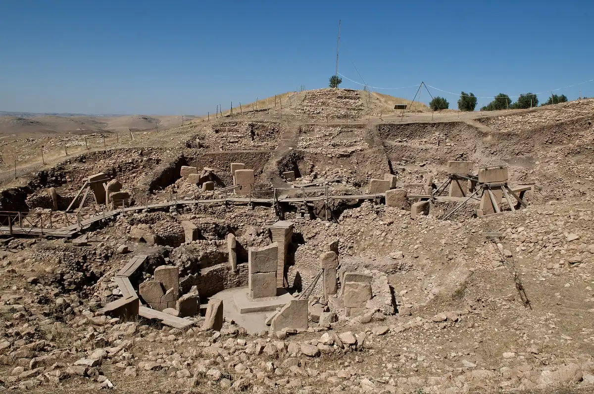

প্রথম সপ্তাহ · সাতটি গল্প
গল্পগুলো, ক্রমানুসারে।
সবচেয়ে পুরোনোটি প্রথমে — পড়তে একটিতে ট্যাপ করুন।
- 01Göbekli TepeStonehenge-এর 6,000 বছর আগে তোলা একটি মন্দির — শিকারি-সংগ্রাহকদের হাতে।
- 02The Tarkhan Dress5,000 বছরের পুরোনো একটি শার্ট, যা সত্যিই কেউ পরেছিল।
- 03Tutankhamun’s Meteorite DaggerKing Tut-কে একটি উল্কাপিণ্ড থেকে তৈরি ফলাসহ সমাহিত করা হয়েছিল।
- 04The Terracotta Army1974 সালে কূপ খুঁড়তে গিয়ে কৃষকেরা 8,000 মাটির সৈন্যের একটি বাহিনী খুঁজে পান।
- 05The Antikythera Mechanismসমুদ্রের তলদেশে পাওয়া 2,000 বছরের পুরোনো একটি কম্পিউটার।
- 06Roman Self-Healing Concreteরোমান বন্দরগুলো সমুদ্রে 2,000 বছর পরেও দাঁড়িয়ে আছে। আমাদেরগুলো কয়েক দশকেই ফেটে যায়।
- 07The Lycurgus Cupরোমান পেয়ালা যা রং বদলায় — ন্যানোপ্রযুক্তির কল্যাণে।

প্রতিশ্রুতি
পড়ার আগে।
জাদুঘর ও বৈজ্ঞানিক সূত্রের সঙ্গে যাচাই করা।
যাচাই করা তথ্য
01প্রতিটি গল্প জাদুঘরের পৃষ্ঠা, জার্নাল আর নামকরা সূত্র পর্যন্ত অনুসরণ করা হয় — আর প্রতিটি নিবন্ধের শেষে সূত্রগুলো তালিকাভুক্ত থাকে।
সৎ ছবি
02আসল জাদুঘরের আলোকচিত্রগুলো তাদের লাইসেন্সসহ কৃতিত্ব দেওয়া হয়। কোনো কল্পিত দৃশ্যকে “AI reconstruction” হিসেবে চিহ্নিত করা হয়।
দেখুন, তারপর পড়ুন
03প্রতিটি গল্প আমাদের Facebook পৃষ্ঠায় এক মিনিটের ভিডিও হিসেবে শুরু হয় এবং এখানে পূর্ণ নিবন্ধ হিসেবে চলতে থাকে।
সূত্র, তালিকাভুক্ত
04প্রতিটি নিবন্ধে তার সূত্র তালিকাভুক্ত থাকে: জাদুঘরের সংগ্রহের পৃষ্ঠা, সমকক্ষ-পর্যালোচিত জার্নাল আর বিশ্বস্ত প্রকাশনা।
যখন বিশেষজ্ঞরা দ্বিমত পোষণ করেন
05যখন বিশেষজ্ঞরা দ্বিমত পোষণ করেন বা কোনো তারিখ অনিশ্চিত থাকে, আমরা তা জানিয়ে দিই। আমরা কখনো উদ্ধৃতি, সংখ্যা বা আবিষ্কার বানিয়ে বলি না।
খনন থেকে
একটি সিল করা আবিষ্কার খুলুন।
পরিখা থেকে সদ্য তোলা। খুলতে একটি সিলে ট্যাপ করুন।

The Lycurgus Cup
সাধারণ আলোয় এই রোমান পেয়ালাটি জেড সবুজ। এর পেছনে আলো ধরুন, আর এটি রক্তলাল হয়ে জ্বলে ওঠে।
গল্পটি পড়ুন →Tutankhamun’s Meteorite Dagger
বালক রাজাকে একটি লোহার ছোরা দিয়ে সমাহিত করা হয়েছিল — এমন এক যুগে যখন মিশর লোহা তৈরি করতে পারত না। এর ধাতু আকাশ থেকে পড়েছিল।
গল্পটি পড়ুন →The Terracotta Army
তারা খরার সময় একটি কূপ খুঁড়ছিল। পানির বদলে কৃষকেরা একজন সৈন্য খুঁজে পেলেন — হাজার হাজারের মধ্যে প্রথমজন।
গল্পটি পড়ুন →সময়রেখা
11,500 বছর, একটি তাকে।
সাতটি গল্প, সবচেয়ে পুরোনোটি প্রথমে। ভ্রমণ করতে একটি স্টপে ট্যাপ করুন — অথবা তাকটি টেনে নিন।
Göbekli Tepe
Stonehenge-এর 6,000 বছর আগে তোলা একটি মন্দির — শিকারি-সংগ্রাহকদের হাতে।
গল্পটি পড়ুন →টিপস: তাকটি পাশের দিকে টানা যায় — আর প্রতিটি স্টপই একটি বোতাম, তাই এটি কিবোর্ড দিয়েও কাজ করে।
নিবন্ধ থেকে
“প্রায় 11,500 বছর আগে তোলা পাথরের বৃত্ত — Stonehenge-এর প্রায় 6,000 বছর আগে — এমন মানুষদের হাতে, যারা তখনো চাষাবাদ করত না।”
বছরের পর বছর
সবচেয়ে পুরোনো থেকে সবচেয়ে নতুন।
প্রতিটি তারিখই সেই তারিখ, যা তার নিজের নিবন্ধে দেওয়া আছে।
The Tarkhan Dress
প্রায় 1323 খ্রিস্টপূর্ব Tutankhamun’s Meteorite Dagger
210 খ্রিস্টপূর্ব
Tutankhamun’s Meteorite Dagger
210 খ্রিস্টপূর্ব The Terracotta Army
প্রায় 150–100 খ্রিস্টপূর্ব
The Terracotta Army
প্রায় 150–100 খ্রিস্টপূর্ব The Antikythera Mechanism
128 খ্রিস্টাব্দ
The Antikythera Mechanism
128 খ্রিস্টাব্দ Roman Self-Healing Concrete
প্রায় 290–325 খ্রিস্টাব্দ
Roman Self-Healing Concrete
প্রায় 290–325 খ্রিস্টাব্দ The Lycurgus Cup
The Lycurgus Cup
তিনটি গল্প
যেকোনো জায়গা থেকে শুরু করুন।
প্রাচীন বস্তু, হারানো শহর আর বিস্মৃত মানুষ।
The Antikythera Mechanismসমুদ্রের তলদেশে পাওয়া 2,000 বছরের পুরোনো একটি কম্পিউটার।গল্পটি পড়ুন →
Roman Self-Healing Concreteরোমান বন্দরগুলো সমুদ্রে 2,000 বছর পরেও দাঁড়িয়ে আছে। আমাদেরগুলো কয়েক দশকেই ফেটে যায়।গল্পটি পড়ুন →
The Terracotta Army1974 সালে কূপ খুঁড়তে গিয়ে কৃষকেরা 8,000 মাটির সৈন্যের একটি বাহিনী খুঁজে পান।গল্পটি পড়ুন →